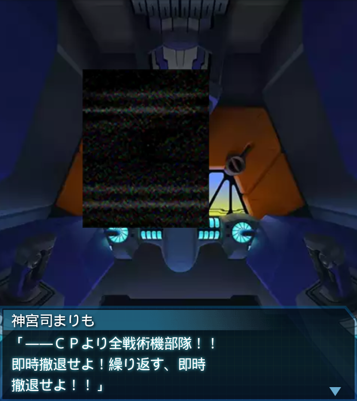

オーストラリア・エアーハイヴ3
『誰』
「それにしても正直なところ、
シミュレーターより楽です。
ＢＥＴＡの数が少ないですね」
香月夕呼
「それは私も気になってたわ。
ハイヴまでの道中にも自然が
残っていた…」
香月夕呼
「他世界の融合による影響だと
思うけど、不幸中の幸いよね」
『誰』
「はい、これより反応炉まで
一気に進み、破壊してきます」
香月夕呼
「ええ、よろしく」
『誰』
「――反応炉の破壊に成功！
繰り返す！
反応炉の破壊に成功！！」
ノイズ
「…………」
『誰』
「…？どうしたＣＰ、
こちらの声が聞こえないのか？」

ノイズ
「…………」
『誰』
「…ＣＰ？聞こえるか？
一体何が起きた？
ＣＰ、聞こえたら返事を――」

神宮司まりも
「――ＣＰより全戦術機部隊！！
即時撤退せよ！繰り返す、即時
撤退せよ！！」
神宮司まりも
「エアーハイヴ目がけＧ弾が発射
された！撤退せよ！安全圏まで
至急退避せよっっ！！」
『誰』
「な――
な、何だって！？冗談だろ！？
こっちはハイヴの最深部だぞ！」
『誰』
「帰路にも残存ＢＥＴＡがいるん
だぞ！どうしてこんな――
撤退！全機撤退だッッ！！」